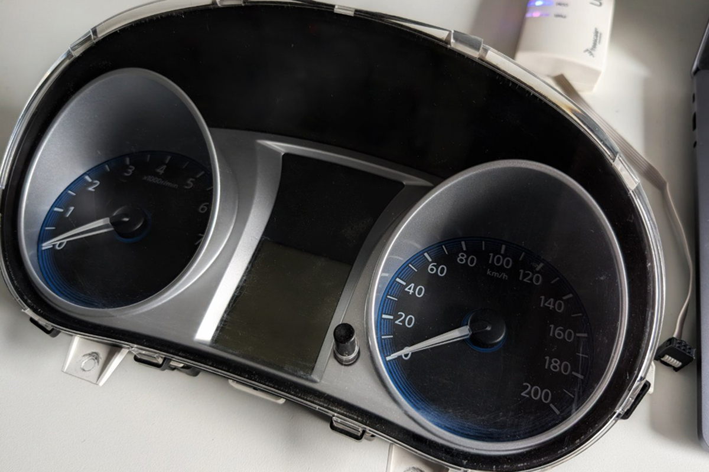
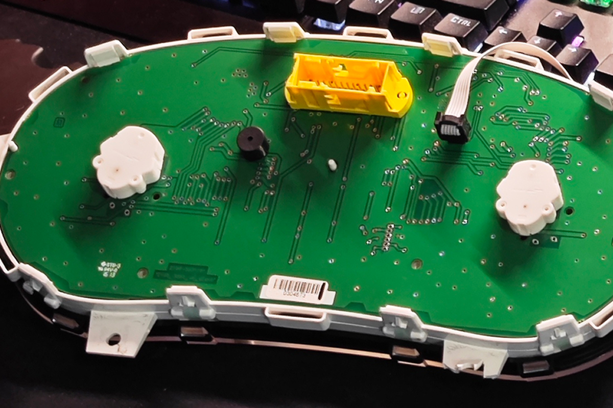
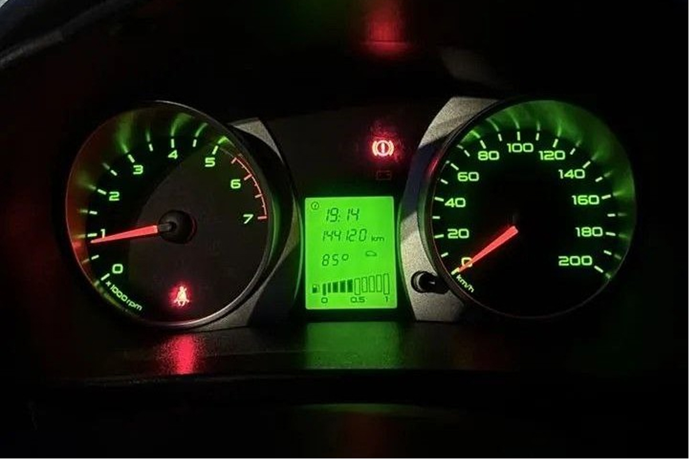
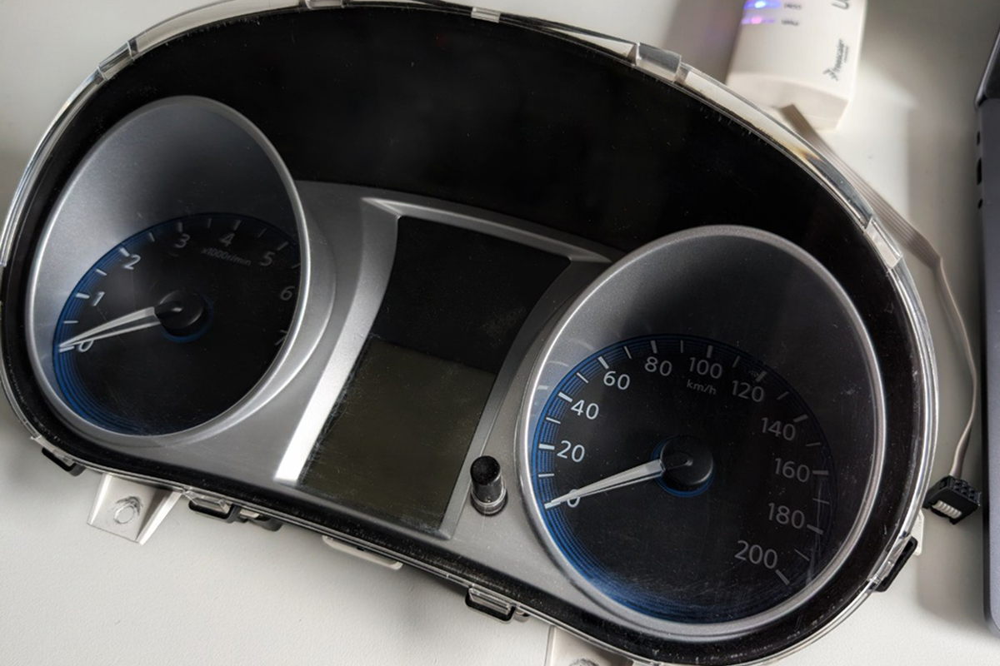
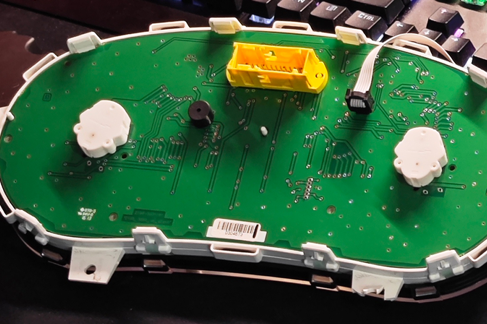
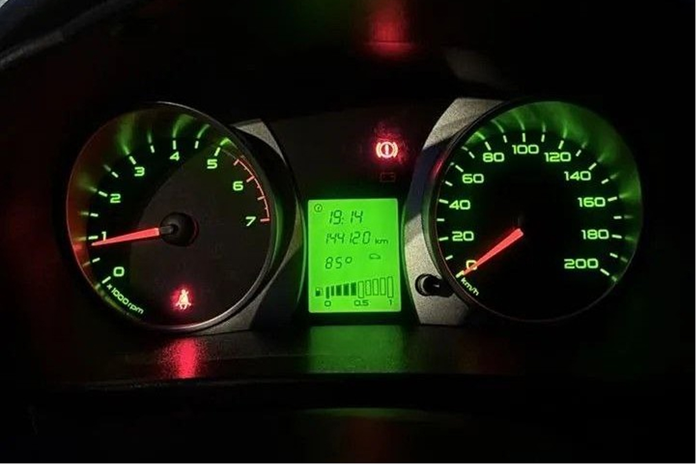

Прошивка приборных панелей Лада Гранта и Калина 2 в Казани
Выполняю прошивку приборных панелей автомобилей LADA Granta и
LADA Kalina 2 в Казани и пригороде.
Работаю с заводскими прошивками, предусмотренными производителем для других комплектаций.
Что активируется
Отображение температуры двигателя (ДТОЖ)
Отображение температуры наружного воздуха (ДТНВ)
Как проходит работа
Проверка ревизии и текущей прошивки панели
Резервное копирование прошивки и дампа данных
Прошивка и установка панели
Проверка результата при вас
Работа занимает 20–30 минут со снятием и установкой панели. Приём по предварительной записи.
Важно знать
Используются только заводские прошивки
Не изменяется конструкция ТС
Не вмешиваюсь в систему управления двигателем
Работа не связана с одометром и экологическими нормами
Поддерживаемые панели
LADA Granta 2190 — версии 076, 087, 090 и выше (не подходит для FL)
LADA Kalina 2192 — версии от 007
❌ Не прошиваю пересвеченные, кастомные панели и панели от FL.
 




